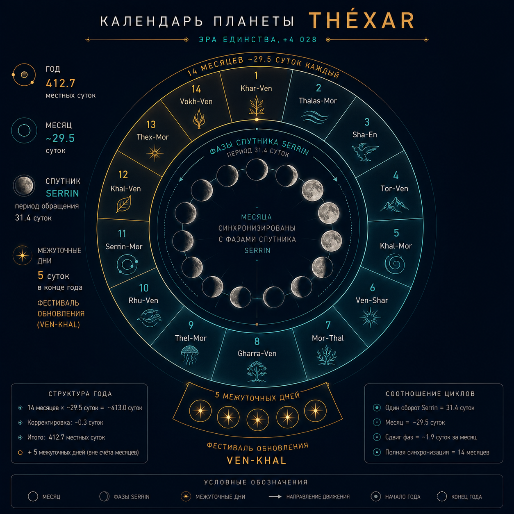

Глава 34: Системы измерений Théxar
«Всему есть мера. Расстоянию — длина шага кхарру. Времени — биение двух сердец. Материи — вес воды в ладонях. Измерять — значит понимать.» — Из «Книги мер», канонический текст, Эра Единства
Связанные разделы: → см. [Гл.09, «Технологии»], → см. [Гл.25, «Ночное небо»] Объём: 20 страниц
34.1 Календарь и время
| Параметр | Значение | Примечание |
|---|---|---|
| Сутки (местные) | 27.3 ч | Вращение Théxar |
| Час | 5 400 с | 90 мин |
| Месяц | 31.4 сут | Синхронизирован с Serrin |
| Год | 412.7 сут | Орбита Théxar |
| Доп. дни | 5 дней Обновления | В конце года |
34.1.1 Месяцы
Названия 14 месяцев:
| № | Название | Значение |
|---|---|---|
| 1 | Khar-Ven | Свет-Истина |
| 2 | Thalas-Mor | Океан-Время |
| 3 | Sha-En | Слово-Единство |
| 4 | Tor-Ven | Гора-Истина |
| 5 | Khal-Mor | Жизнь-Время |
| 6 | Ven-Shar | Истина-Пламя |
| 7 | Mor-Thal | Время-Океан |
| 8 | Gharra-Ven | Глубина-Истина |
| 9 | Thel-Mor | Луна-Время |
| 10 | Rhu-Ven | Народ-Истина |
| 11 | Serrin-Mor | Спутник-Время |
| 12 | Khal-Ven | Жизнь-Истина |
| 13 | Thex-Mor | Земля-Время |
| 14 | Vokh-Ven | Гармония-Истина |
5 дней Обновления (Ven-Khal): не принадлежат ни одному месяцу.

Рис. 34.1. Годовой круг календаря Xha'Ruun: 412.7 суток, 14 месяцев и 5 дней Обновления — ART-000025.
34.2 Система мер
34.2.1 Длина
| Единица | Значение | Применение |
|---|---|---|
| Шаг (sha) | 0.82 м | Бытовой |
| Длань (dlan) | 0.12 м | Строительный |
| Трость (ven) | 1.64 м | Земельный |
| Лига (mor) | 4.92 км | Путевой |
34.2.2 Масса
| Единица | Значение | Применение |
|---|---|---|
| Горсть (khal) | 0.42 кг | Бытовая |
| Камень (tor) | 42 кг | Промышленная |
| Поклажа (ruun) | 420 кг | Торговая |
34.2.3 Время
| Единица | Значение | Применение |
|---|---|---|
| Миг (sha) | 0.6 с | Бытовой |
| Час (mor) | 5 400 с | Стандартный |
| Доля (ven) | 0.1 ч | Точное время |
Конец главы 34.